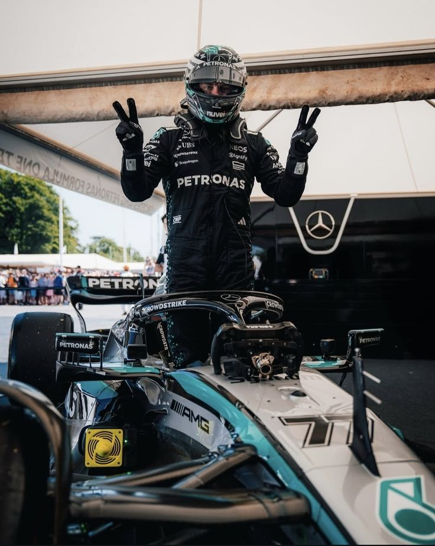

Valtteri Bottas
DRIVER PRESENTATION
Valtteri Bottas
Trayectoria Competitiva y Consolidación Técnica de Valtteri Bottas
Valtteri Bottas inició su formación en el karting finlandés (1994), estableciendo una base sólida para su ascenso a categorías superiores. Su paso por F2 y F3 resultó en una promoción acelerada hacia la Fórmula 1, debutando en 2013 con Williams-Renault. La asociación con Mercedes desde 2017 posicionó a Bottas como piloto de estructura, acumulando 17 victorias en su estadía con el equipo alemán (2017-2021). Durante el período 2021, Bottas demostró una consistencia estratégica en circuitos de alta velocidad y gestión de neumáticos, consolidándose como referente de estabilidad y fiabilidad técnica. Su incorporación a Alfa Romeo Racing-Ferrari en 2022 le permitió continuar su legado en F1, acumulando más de 60 podios en su carrera y validando su estatus como piloto de élite internacional.
MOMENTOS DESTACADOS

Primera Victoria en F1
Rusia 2017: Bottas logra su primer triunfo tras una salida impecable y aguantando la presión de Vettel.

Victoria en Austria 2020
Un fin de semana perfecto desde la pole hasta la victoria, liderando todas las vueltas en el Red Bull Ring.
Maestría bajo la lluvia
Turquía 2021: Una exhibición técnica en condiciones de pista mojada logrando una victoria contundente.